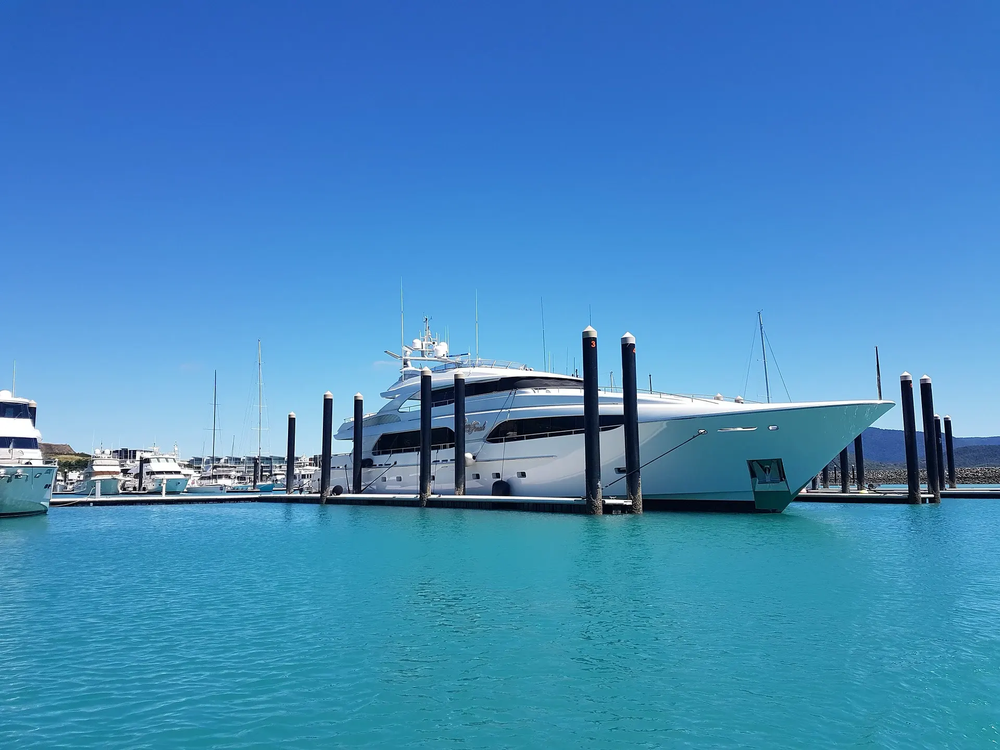
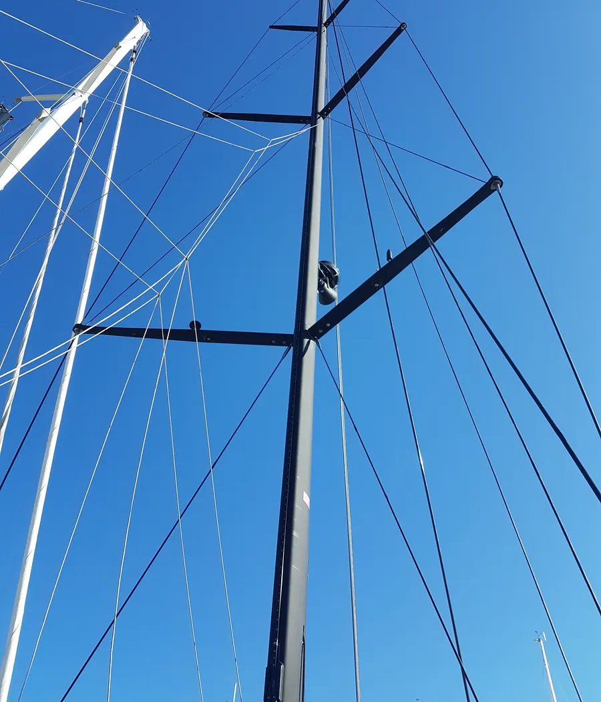
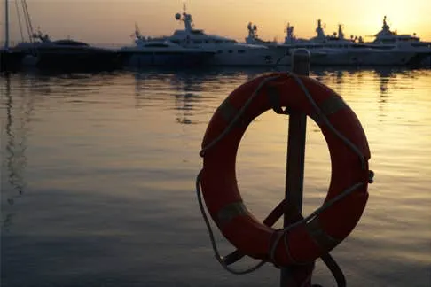
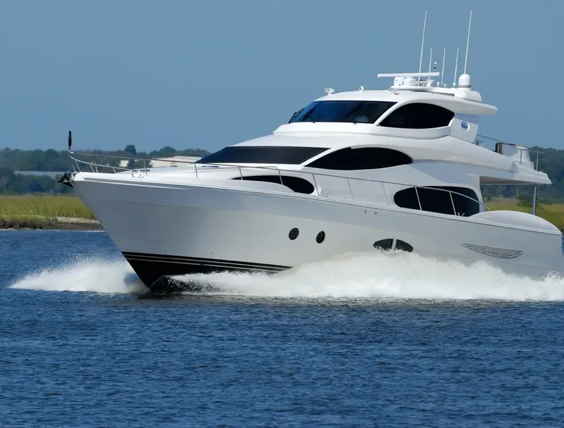
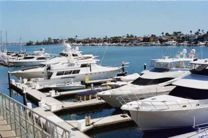
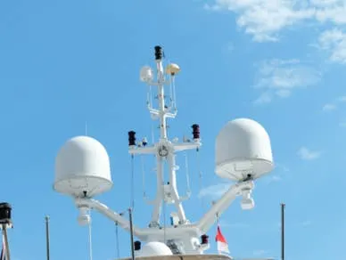
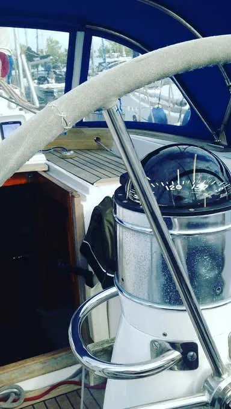
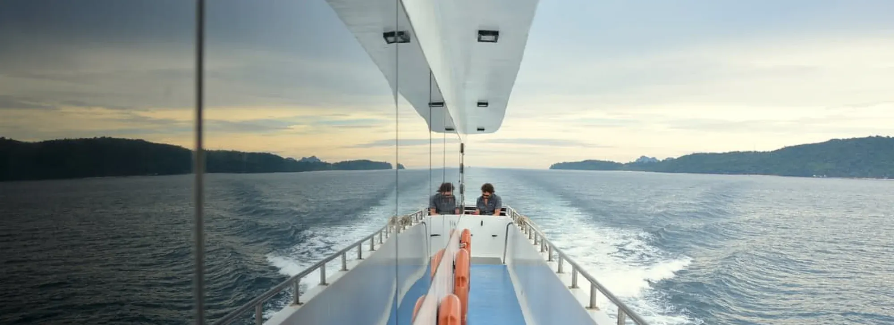
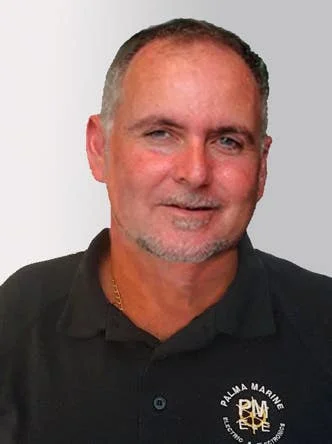

✦ Palma de Mallorca · Islas Baleares
Electricidad y electrónica a bordo
Revisamos, reparamos e instalamos todos los sistemas eléctricos y electrónicos de su barco, y le suministramos el material directamente en su embarcación.
Lunes a viernes, 08:00 – 18:00 h · Asistencia técnica fuera de horario con tarifa especial
✦ Nuestros servicios
Todo lo eléctrico y electrónico de su barco, en un solo equipo

Test & informesAislamiento, baterías y alarmas →
IluminaciónLED, subacuática y navegación →
BateríasBaterías, cargadores y SAI →
ElectricidadDiagnóstico y reparación →
ElectrónicaNavegación, TV y antenas →
SuministrosInstalación y equipamiento →
✦ Qué hacemos
Diagnóstico, informe y reparación
Test & informes
Comprobamos el estado real de la instalación, le entregamos un informe y reparamos los fallos encontrados.
Pedir un test- Test de aislamiento de instalaciones eléctricas (MEGATEST), informe y reparación de fallos.
- Test de aislamiento y daños de cables eléctricos y de antenas en mástil, informe y reparación.
- Test de transformadores de aislamiento, informe y reparación.
- Test de aislamiento de bombas y motores eléctricos, informe y reparación.
- Test de estado de baterías: motor, generadores, servicio, radio, emergencia, etc.
- Revisión de configuración y operación de cargadores según las baterías instaladas.
- Revisión de mantenimiento de cargadores de baterías y reparación.
- Informe del sistema de alarmas y reparación: luces de navegación, bombas de achique, detectores de humo, fuego, etc.
- Luces de emergencia: chequeo, reparación e integración con la iluminación instalada.
- Resistencias de termos eléctricos: aislamiento, fallos o fugas de corriente y reparación.
- Conexión a puerto: cable y conectores, Cable Master, transformador de aislamiento, arranque secuencial, etc.
- Revisión de mantenimiento de paneles de distribución eléctrica.
- Sistemas de control hidráulico, dirección, pasarela, etc.
- Mesas eléctricas, muebles de TV eléctricos, cortinas eléctricas, etc.
- Informe de conexión de cables antes de desmontar o montar el mástil.
Iluminación
Revisión, reparación y suministro de todo el material de iluminación que necesite, a bordo y en el mástil.
Consultar cambio a LED- Revisión de iluminación, reparación y suministro de todo el material que pueda necesitar.
- Asesoramiento en el cambio a LED en su barco o mástil, reparación y suministro de material.
- Iluminación bajo el agua (underwater lights): instalación y reparación.
- Revisión de zonas de iluminación para evitar sobrecargas de tensión.
- Instalación de atenuadores (dimmers) para luz incandescente o LED.
- Luces de navegación: reparación o cambio a LED, configurando el panel de alarmas de luces.
Baterías y cargadores
Le llevamos las baterías al barco y dejamos los cargadores configurados para el tipo que tenga instalado.
- Ácido
- GEL
- AGM
- Litio
- NiCd
- Suministro de baterías directamente en su barco: motor, generador, servicio, emergencia, SAI, radio, embarcación auxiliar, etc.
- Informe del estado de baterías (Load Test).
- Operación y configuración correcta de cargadores según las baterías instaladas.
- Revisión de mantenimiento de cargadores: limpieza interna de polvo, cambio de ventiladores de refrigeración, etc.
- Revisión del conexionado de baterías, su funcionamiento y su carga.
- SAI (sistema de alimentación ininterrumpida): revisión o cambio de baterías.
- Instalación o reparación de desconectadores, aisladores y fusibles de protección de baterías.
Electricidad
Revisión y reparación de todos los problemas eléctricos que su barco pueda tener.
Describir una avería- Diagnóstico y reparación de averías eléctricas a bordo.
- Paneles de distribución eléctrica, protecciones y cuadros.
- Conexión a puerto, transformadores de aislamiento y arranque secuencial.
- Bombas, motores eléctricos y variadores de frecuencia.
- Sistemas de control hidráulico, dirección y pasarela.
Electrónica
Instalación, configuración e integración de los equipos de navegación, comunicación y entretenimiento.
Consultar un equipo- Instalación, reparación o configuración de sensores y transductores.
- Integración de alarmas de motores, generadores, tanques, etc. en pantallas de navegación.
- Actualización de cartas electrónicas y software de pantallas y equipos, e integración en su TV, tablet o teléfono.
- Indicaciones de nivel de tanques en pantalla: combustible, agua potable, aguas grises o negras, etc.
- Revisión, reparación o cambio de equipos y pantallas: radar, piloto automático, viento, estación meteorológica, parámetros de motor, etc.
- Ajuste, reparación e integración de los sistemas eléctricos, electrónicos y de navegación.
- Instalación de televisión y antenas: TDT, satélite y circuito cerrado de TV (CCTV).
- Control de sus sistemas de audio y vídeo desde teléfono, tablet o mando a distancia.
- Reparación y ajuste de mesas eléctricas, muebles de TV eléctricos, cortinas eléctricas, etc.
- Instalación, configuración o reparación de variadores de frecuencia de motores eléctricos.
Suministro de material
Podemos suministrar e instalar todo tipo de material eléctrico y electrónico directamente en su embarcación.
Pedir material- CablesNormales o marinos, libres de halógenos, de comunicaciones, radio y conexión a puerto.
- IluminaciónBombillas y lámparas fluorescentes, halógenas, incandescentes y LED. Luces de navegación, lámparas y casquillos.
- MandoInterruptores y pulsadores (normales o con protección IP). Paneles de control remoto para pasarela, grúas, TV y música.
- PantallasDe TV, navegación y sistemas.
- SensoresDe proximidad, nivel de tanques, gas, fuego y humo.
- ConectoresEuropeo, inglés y americano, normales o para conexión a puerto. Terminales para cables.
- CuadrosCuadros eléctricos, cajas de control y de empalmes, prensaestopas y regletas.
- AntenasRadar, VHF, HF, TV, TDT, SAT, Wi‑Fi y 4G.
- ProteccionesFusibles, magnetotérmicos y diferenciales.
- BandejasPara cable en acero inoxidable, galvanizado o PVC.
- CCTVCámaras y control de circuito cerrado de televisión.
- EnergíaCargadores, inversores, transformadores, transformadores de aislamiento y baterías (Ácido, GEL, AGM, Litio, NiCd).
- MotoresVariadores de frecuencia de motores eléctricos.
- MedidaHerramientas y equipos de medida para electricidad, presión, temperatura e iluminación.
✦ Cómo trabajamos
De la avería al barco listo para navegar
- 1
Revisión a bordo
Acudimos a la embarcación y medimos: aislamiento, baterías, cargadores, alarmas.
- 2
Informe
Le explicamos por escrito qué hemos encontrado y qué recomendamos.
- 3
Reparación o instalación
Reparamos, sustituimos o integramos los equipos en sus sistemas.
- 4
Material en el barco
Suministramos el material directamente en su embarcación.

Suministramos e instalamos todo tipo de material eléctrico y electrónico directamente en su embarcación
Hablar con un técnico
✦ Su contacto directo
Gustavo Fernández
Project Manager
Hable directamente con quien va a revisar su barco. Le atendemos de lunes a viernes de 08:00 a 18:00 h, y fuera de ese horario ofrecemos asistencia técnica con tarifa especial.
Guarde el contacto en su móvil
Escanee el código con la cámara para añadir a Gustavo Fernández a sus contactos, con teléfono y email.
Descargar tarjeta de contacto (.vcf)✦ Contacto
Cuéntenos qué necesita su barco
- Teléfono
- +34 629 575 142
- info@palmamarine.es
- Horario
- Lunes a viernes, 08:00 – 18:00 h
Asistencia fuera de horario con tarifa especial - Zona
- Palma de Mallorca, Islas Baleares, España
Ver en el mapa ↗